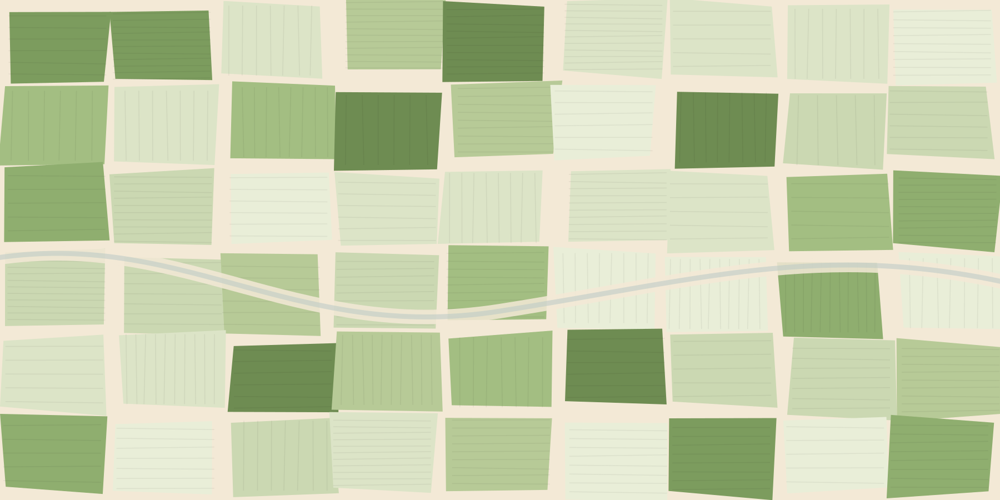

<template>
  <style>
    #root {
      position: absolute;
      inset: 0;
      overflow: hidden;
      background: #f3e9d6;
      font-family: Inter, system-ui, sans-serif;
    }

    /* the whole world, one camera wrapper */
    #s3-cam {
      position: absolute;
      left: 0; top: 0;
      width: 1920px; height: 1080px;
      transform-origin: 960px 540px;
    }

    /* ---------- sky ---------- */
    #s3-sky { position: absolute; inset: -60% -40%; background: #f3e9d6; }
    #s3-sky-top {
      position: absolute;
      left: -20%; right: -20%; top: -260%;
      height: 200%;
      background: linear-gradient(to bottom, #dfe9d6 0%, #f0ead6 42%, #f3e9d6 100%);
    }
    .s3-cloud {
      position: absolute;
      background: #fbf7ec;
      border-radius: 50%;
      filter: blur(0.5px);
    }
    .s3-cloud span { position: absolute; background: inherit; border-radius: 50%; }

    /* ---------- the ground plane, seen from above ---------- */
    #s3-ground {
      position: absolute;
      left: 50%; top: 50%;
      width: 1800px; height: 1200px;
      margin: -600px 0 0 -900px;
      border-radius: 22px;
      overflow: hidden;
      background: #f3e9d6;
      box-shadow: 0 70px 130px rgba(38, 59, 41, 0.26);
    }
    #s3-parcels { position: absolute; left: -120px; top: -80px; width: 2040px; height: 1360px; }
    #s3-groundlight {
      position: absolute; inset: 0;
      background: radial-gradient(760px 520px at 30% 18%, rgba(255, 247, 228, 0.5), rgba(255, 247, 228, 0) 70%);
      pointer-events: none;
    }

    /* ---------- farmer dots ---------- */
    .s3-dot {
      position: absolute;
      width: 26px; height: 26px;
      margin: -13px 0 0 -13px;
      border-radius: 50%;
      background: #35512c;
      box-shadow: 0 0 0 7px rgba(53, 81, 44, 0.14);
      opacity: 0;
    }
    .s3-dot.hero {
      width: 36px; height: 36px;
      margin: -18px 0 0 -18px;
      background: #7e9b62;
      box-shadow: 0 0 0 10px rgba(126, 155, 98, 0.22);
    }
    #s3-links { position: absolute; inset: 0; }
    #s3-links path { fill: none; stroke: #6a8b52; stroke-width: 3; stroke-linecap: round; opacity: 0; }

    /* ---------- price chips ---------- */
    .s3-chip {
      position: absolute;
      transform-origin: 50% 100%;
      padding: 18px 26px;
      border-radius: 20px;
      background: #fbfcf9;
      box-shadow: 0 16px 34px rgba(38, 59, 41, 0.22);
      white-space: nowrap;
      opacity: 0;
    }
    .s3-chip .m {
      font: italic 400 42px/1 "EB Garamond", Georgia, serif;
      color: #6f7d67;
      margin-bottom: 8px;
    }
    .s3-chip .v {
      font: 600 56px/1 Inter, sans-serif;
      color: #263b29;
      letter-spacing: -0.018em;
    }
    .s3-chip .v em { font-style: normal; color: #5c6b57; font-size: 42px; font-weight: 500; margin-left: 9px; }
    .s3-chip.picked { background: #eef4e7; box-shadow: 0 18px 38px rgba(38, 59, 41, 0.26), 0 0 0 2px #bedda7 inset; }

    /* ---------- ring on the hero dot ---------- */
    #s3-ring {
      position: absolute;
      width: 128px; height: 128px;
      margin: -64px 0 0 -64px;
      border-radius: 50%;
      border: 3px solid rgba(126, 155, 98, 0.85);
      opacity: 0;
    }

    /* ---------- copy ---------- */
    #s3-label {
      position: absolute; left: 108px; top: 96px;
      text-shadow: 0 2px 14px rgba(243, 233, 214, 0.95), 0 0 34px rgba(243, 233, 214, 0.9);
      font: italic 400 31px/1 "EB Garamond", Georgia, serif;
      color: #6f7d67;
      opacity: 0;
    }
    #s3-panel {
      position: absolute;
      left: 62px; top: 58px;
      width: 792px; height: 348px;
      border-radius: 30px;
      background: #f6efe0;
      box-shadow: 0 22px 48px rgba(38, 59, 41, 0.16);
      opacity: 0;
    }
    #s3-head {
      position: absolute; left: 104px; top: 140px;
      width: 640px;
      font: 600 72px/1.06 Inter, sans-serif;
      text-shadow: 0 2px 18px rgba(243, 233, 214, 0.95), 0 0 42px rgba(243, 233, 214, 0.9);
      letter-spacing: -0.028em;
      color: #263b29;
      opacity: 0;
    }
    #s3-sub {
      position: absolute; left: 112px; top: 400px;
      width: 470px;
      font: 400 29px/1.5 Inter, sans-serif;
      color: #4f6150;
      opacity: 0;
    }
    #s3-count {
      position: absolute; right: 84px; top: 108px;
      padding: 22px 30px 26px;
      text-align: right;
      border-radius: 22px;
      background: rgba(251, 252, 249, 0.95);
      box-shadow: 0 20px 46px rgba(38, 59, 41, 0.18);
      opacity: 0;
    }
    #s3-count .n {
      font: 600 84px/1 Inter, sans-serif;
      letter-spacing: -0.03em;
      color: #35512c;
    }
    #s3-count .u {
      margin-top: 12px;
      font: italic 400 30px/1.2 "EB Garamond", Georgia, serif;
      color: #6f7d67;
    }

    /* ---------- small price ticks ---------- */
    .s3-tick {
      position: absolute;
      transform: translate(-50%, -50%);
      font: 500 42px/1 Inter, sans-serif;
      color: #35512c;
      background: rgba(251, 252, 249, 0.93);
      padding: 11px 16px;
      border-radius: 12px;
      box-shadow: 0 6px 16px rgba(38, 59, 41, 0.14);
      white-space: nowrap;
    }

    #s3-title2 {
      position: absolute; left: 112px; top: 146px;
      width: 660px;
      font: 600 76px/1.08 Inter, sans-serif;
      letter-spacing: -0.026em;
      color: #263b29;
      opacity: 0;
    }

    #s3-hero-label {
      position: absolute;
      left: 96px;
      top: 132px;
      padding: 26px 34px 30px;
      border-radius: 20px;
      background: #fbfcf9;
      box-shadow: 0 20px 44px rgba(38, 59, 41, 0.18);
      font: 600 62px/1.1 Inter, sans-serif;
      letter-spacing: -0.026em;
      color: #263b29;
      opacity: 0;
    }
    #s3-hero-label span {
      display: block;
      margin-top: 16px;
      font: italic 400 32px/1 "EB Garamond", Georgia, serif;
      letter-spacing: 0;
      color: #6f7d67;
    }

    #grain3 {
      position: absolute; inset: 0;
      background-image: url("../assets/grain.png");
      background-size: 256px 256px;
      opacity: 0.05; mix-blend-mode: multiply; pointer-events: none;
    }
  </style>

  <div data-hf-id="hf-3xc5" id="root" data-composition-id="s3" data-width="1920" data-height="1080">
    <div data-hf-id="hf-qiqo" id="s3-cam" data-layout-allow-overflow>
      <div data-hf-id="hf-ectq" id="s3-sky" data-layout-allow-overflow><div data-hf-id="hf-4rlt" id="s3-sky-top"></div></div>

      <div data-hf-id="hf-dkg9" id="s3-ground">
        <div data-hf-id="hf-4uz3" id="s3-parcels" data-layout-allow-overflow></div>
        <div data-hf-id="hf-rq3z" id="s3-groundlight"></div>
        <svg data-hf-id="hf-yql2" id="s3-links" viewBox="0 0 1920 1080" preserveAspectRatio="none"></svg>
      </div>

      <div data-hf-id="hf-g82m" id="s3-ring"></div>
    </div>

    <div data-hf-id="hf-pn01" id="s3-panel"></div>

    <div data-hf-id="hf-p9ce" id="s3-label">Nashik district</div>
    <div data-hf-id="hf-w0ay" id="s3-head">Every dot is<br data-hf-id="hf-x5px" />a field like this one.</div>
    <div data-hf-id="hf-2kgx" id="s3-sub">Soil results, leaf reports, and what a neighbour was paid.</div>
    <div data-hf-id="hf-id59" id="s3-count"><div data-hf-id="hf-gunz" class="n">1,284</div><div data-hf-id="hf-jze9" class="u">farmers reporting this week</div></div>
    <div data-hf-id="hf-zlup" id="s3-title2">And what a quintal<br data-hf-id="hf-rsrt" />is worth today.</div>
    <div data-hf-id="hf-3n59" id="s3-hero-label">This field<span data-hf-id="hf-h06m">2 acres · wheat · Nashik</span></div>

    <div data-hf-id="hf-kmgd" id="grain3"></div>

    <script>const F = 0.8;                       // whole-film speed-up
      const T = (x) => +(x * F).toFixed(3);  // scale an authored beat time

      const tl = gsap.timeline({ paused: true });

      // ---- deterministic dot layout: a seeded LCG, computed at author time ----
      const rng = (() => {
        let s = 20261024;
        return () => {
          s = (s * 1103515245 + 12345) % 2147483648;
          return s / 2147483648;
        };
      })();

      // dot coordinates are screen coordinates of the unscaled ground
      const dots = [];
      const HERO = { x: 960, y: 470 };
      for (let i = 0; i < 78; i++) {
        let x, y;
        if (i === 0) {
          x = HERO.x;
          y = HERO.y;
        } else {
          const a = rng() * Math.PI * 2;
          const r = Math.pow(rng(), 0.62) * 560 + 46;
          x = HERO.x + Math.cos(a) * r * 1.28;
          y = HERO.y + Math.sin(a) * r * 0.86;
          if (x < 250 || x > 1690 || y < 210 || y > 1000) {
            x = 280 + rng() * 1380;
            y = 250 + rng() * 730;
          }
        }
        dots.push({ x, y, hero: i === 0 });
      }

      const ground = document.getElementById("s3-ground");
      const links = document.getElementById("s3-links");
      const gx = 60, gy = -60; // ground's top-left in screen space

      dots.forEach((d, i) => {
        const el = document.createElement("div");
        el.className = "s3-dot" + (d.hero ? " hero" : "");
        el.id = "s3-dot-" + i;
        el.style.left = d.x - gx + "px";
        el.style.top = d.y - gy + "px";
        ground.appendChild(el);
      });

      // ---- deterministic nearest-neighbour order, used by the dot reveal and the ticks
      function orderAll() {
        return dots
          .map((d, i) => ({ i, d, dist: Math.hypot(d.x - HERO.x, d.y - HERO.y) }))
          .sort((a, b) => a.dist - b.dist);
      }
      const nearAll = orderAll().filter(o => o.i !== 0);
      const near = nearAll.slice(0, 7);

      // ---- small price ticks: scattered over the whole district, kept clear of chips
      near.forEach((o, k) => {
        const p = document.createElementNS("http://www.w3.org/2000/svg", "path");
        const mx = (HERO.x + o.d.x) / 2, my = (HERO.y + o.d.y) / 2 - 52;
        p.setAttribute("d", `M${HERO.x - gx} ${HERO.y - gy} Q${mx - gx} ${my - gy} ${o.d.x - gx} ${o.d.y - gy}`);
        p.id = "s3-link-" + k;
        links.appendChild(p);
      });

      // ---- four price chips, one per quarter of the plate. Fixed fractions of
      //      the ground box, so they stay evenly spread at every zoom level and
      //      can never crowd the copy column or each other.
      const CHIP_FRACTIONS = [
        { fx: 0.26, fy: 0.30 },
        { fx: 0.63, fy: 0.24 },
        { fx: 0.24, fy: 0.66 },
        { fx: 0.62, fy: 0.64 },
      ];
      const prices = [
        { name: "Lasalgaon", v: "\u20b9 2,520" },
        { name: "Nashik", v: "\u20b9 2,560" },
        { name: "Pimpalgaon", v: "\u20b9 2,500" },
        { name: "Yeola", v: "\u20b9 2,470" },
      ];
      // ground box in screen coords: 1800 x 1200 centred on (960, 540)
      const GX0 = 60, GY0 = -60;
      const chipBoxes = [];
      CHIP_FRACTIONS.forEach((f, k) => {
        const x = GX0 + 1800 * f.fx;
        const y = GY0 + 1200 * f.fy;
        const el = document.createElement("div");
        el.className = "s3-chip";
        el.id = "s3-chip-" + k;
        el.innerHTML = `<div class="m">${prices[k].name}</div><div class="v">${prices[k].v}<em>/ q</em></div>`;
        ground.appendChild(el);
        el.style.left = x - gx + "px";
        el.style.top = y - gy + "px";
        chipBoxes.push({ x, y, w: 400, h: 168 });
      });

      // ring on the hero
      const ring = document.getElementById("s3-ring");
      ring.style.left = HERO.x + "px";
      ring.style.top = HERO.y + "px";

      // ---- small price ticks: scattered over the whole district, kept clear of chips
      const tickEls = [];
      let tickCount = 0;
      for (const o of orderAll()) {
        if (tickCount >= 10) break;
        const d = dots[o.i];
        if (o.i === 0) continue;
        if (Math.hypot(d.x - HERO.x, d.y - HERO.y) < 230) continue;
        if (chipBoxes.some(b => Math.abs(d.x - b.x) < 360 && Math.abs(d.y - b.y) < 230)) continue;
        if (tickEls.some(t => Math.hypot(t.x - d.x, t.y - d.y) < 240)) continue;
        const el = document.createElement("div");
        el.className = "s3-tick";
        el.textContent = ["₹2,480", "₹2,515", "₹2,430", "₹2,540", "₹2,470", "₹2,500"][tickCount % 6];
        el.style.left = d.x - gx + "px";
        el.style.top = d.y - gy + "px";
        ground.appendChild(el);
        tickEls.push({ el, x: d.x, y: d.y });
        tickCount++;
      }

      // ---------------- initial state ----------------
      // the ground starts filling the frame, cropped — the pull-back reveals it
      gsap.set("#s3-ground", { scale: 1.34, x: 128, y: 96, borderRadius: "28px" });
      gsap.set(".s3-dot", { opacity: 0, scale: 0.4 });
      gsap.set(".s3-chip", { opacity: 0, y: 16, scale: 0.92 });
      if (tickEls.length) gsap.set(tickEls.map(t => t.el), { opacity: 0, y: 8 });

      // clouds, built as overlapping paper discs, behind the ground
      const cam = document.getElementById("s3-cam");
      const cloudDefs = [
        { x: -260, y: 120, w: 780, h: 250, o: 0.92 },
        { x: 900, y: -60, w: 980, h: 280, o: 0.86 },
        { x: 1500, y: 300, w: 620, h: 210, o: 0.8 },
        { x: 180, y: 430, w: 520, h: 180, o: 0.7 },
        { x: 1180, y: 520, w: 460, h: 160, o: 0.62 },
      ];
      cloudDefs.forEach((c, i) => {
        const el = document.createElement("div");
        el.className = "s3-cloud";
        el.setAttribute("data-layout-allow-overflow", "");
        el.id = "s3-cloud-" + i;
        el.style.left = c.x + "px";
        el.style.top = c.y + "px";
        el.style.width = c.w + "px";
        el.style.height = c.h * 0.62 + "px";
        el.style.opacity = c.o;
        el.style.borderRadius = c.h + "px";
        el.innerHTML =
          `<span style="left:${-c.w * 0.04}px;top:${-c.h * 0.34}px;width:${c.w * 0.42}px;height:${c.h * 0.78}px"></span>` +
          `<span style="left:${c.w * 0.26}px;top:${-c.h * 0.6}px;width:${c.w * 0.46}px;height:${c.h * 1.04}px"></span>` +
          `<span style="left:${c.w * 0.62}px;top:${-c.h * 0.22}px;width:${c.w * 0.34}px;height:${c.h * 0.66}px"></span>`;
        // behind the ground in paint order
        cam.insertBefore(el, document.getElementById("s3-ground"));
        gsap.set(el, { scale: 0.94, y: 30 });
      });

      // ---------------- 0.0 the crop becomes the district ----------------
      tl.fromTo("#s3-cam", { scale: 1.55, opacity: 0.9 }, { scale: 1, opacity: 1, duration: T(1.6), ease: "power2.out" }, T(0));
      tl.to("#s3-ground", { scale: 0.96, x: 116, y: 60, duration: T(2.0), ease: "power2.out" }, T(0.05));
      tl.to("#s3-ground", { scale: 0.8, x: 116, y: 34, duration: T(2.2), ease: "power2.inOut" }, T(2.1));

      cloudDefs.forEach((c, i) => {
        tl.to("#s3-cloud-" + i, { scale: 1, y: 0, duration: T(2.6 + i * 0.12), ease: "power2.out" }, T(0.1 + i * 0.1));
      });

      // ---------------- 1.1 the district reads; dots light outward from the hero ----------------
      const order = orderAll();
      order.forEach((o, k) => {
        tl.to("#s3-dot-" + o.i, { opacity: 1, scale: 1, duration: T(0.34), ease: "back.out(1.6)" }, T(1.15 + Math.min(k, 60) * 0.026));
      });

      // ---------------- 2.6 links draw outward ----------------
      for (let k = 0; k < 7; k++) {
        const p = document.getElementById("s3-link-" + k);
        const len = p.getTotalLength();
        gsap.set(p, { strokeDasharray: len, strokeDashoffset: len });
        tl.to(p, { opacity: 1, duration: T(0.12) }, T(2.6 + k * 0.1));
        tl.to(p, { strokeDashoffset: 0, duration: T(0.5), ease: "power2.inOut" }, T(2.6 + k * 0.1));
      }

      // ---------------- 3.4 titles ----------------
      tl.to("#s3-panel", { opacity: 1, duration: T(0.5), ease: "power2.out" }, T(3.2));
      tl.fromTo("#s3-label", { opacity: 0 }, { opacity: 1, duration: T(0.4) }, T(3.3));
      tl.fromTo("#s3-head", { opacity: 0, y: 22 }, { opacity: 1, y: 0, duration: T(0.75), ease: "power3.out" }, T(3.4));
      tl.fromTo("#s3-count", { opacity: 0, y: 14 }, { opacity: 1, y: 0, duration: T(0.7), ease: "power3.out" }, T(4.1));
      tl.to("#s3-ground", { scale: 0.72, x: 116, y: 18, duration: T(2.6), ease: "power2.inOut" }, T(4.4));

      // ---------------- 5.6 price chips land ----------------
      CHIP_FRACTIONS.forEach((f, n) => {
        tl.to("#s3-chip-" + n, { opacity: 1, y: 0, scale: 1, duration: T(0.5), ease: "back.out(1.5)" }, T(5.6 + n * 0.22));
      });

      // ---------------- 7.5 the district becomes the price map ----------------
      tl.to("#s3-head, #s3-label", { opacity: 0, y: -14, duration: T(0.55), ease: "power2.in" }, T(7.4));
      tl.to("#s3-panel", { opacity: 0, duration: T(0.5), ease: "power2.in" }, T(7.55));
      tl.to("#s3-count", { opacity: 0, duration: T(0.5) }, T(7.5));

      tickEls.forEach((t, k) => {
        tl.to(t.el, { opacity: 1, y: 0, duration: T(0.34), ease: "power3.out" }, T(7.9 + k * 0.05));
      });

      tl.to("#s3-ground", { scale: 0.74, x: 108, y: 10, duration: T(2.4), ease: "power2.inOut" }, T(7.9));
      tl.fromTo("#s3-title2", { opacity: 0, y: 18 }, { opacity: 1, y: 0, duration: T(0.75), ease: "power3.out" }, T(8.2));

      // ---------------- 10.7 the hero's own chip is picked out ----------------
      const heroChip = document.getElementById("s3-chip-0");
      if (heroChip) {
        tl.to(heroChip, { scale: 1.1, duration: T(0.45), ease: "back.out(2)" }, T(10.7));
        tl.call(() => heroChip.classList.add("picked"), null, T(10.7));
      }
      tl.set("#s3-ring", { opacity: 0, scale: 0.5 }, T(10.78));
      tl.to("#s3-ring", { opacity: 1, scale: 1, duration: T(0.55), ease: "power3.out" }, T(10.8));
      tl.to("#s3-ring", { opacity: 0, scale: 2.1, duration: T(1.1), ease: "power2.out" }, T(11.35));

      // ---------------- 11.9 push into the hero dot; everything else falls away ----------------
      tl.to("#s3-cam", { scale: 2.4, x: -230, y: 115, duration: T(5.9), ease: "power2.in" }, T(11.9));
      tl.to(".s3-cloud", { opacity: 0, duration: T(1.2) }, T(12.1));
      tl.to("#s3-sky-top", { opacity: 0, duration: T(1.2) }, T(12.1));
      if (tickEls.length) tl.to(tickEls.map(t => t.el), { opacity: 0, duration: T(0.8) }, T(11.9));
      tl.to("#s3-links path", { opacity: 0, duration: T(0.55) }, T(11.95));
      tl.to(".s3-chip", { opacity: 0, duration: T(0.7) }, T(12.2));
      tl.to(".s3-dot:not(.hero)", { opacity: 0, duration: T(1.1) }, T(12.35));
      tl.to("#s3-title2", { opacity: 0, duration: T(0.5) }, T(11.9));

      // the hero dot stays as the last thing on screen, and the crop keeps closing
      tl.to("#s3-ground", { scale: 0.84, x: 100, y: 10, duration: T(6.0), ease: "power2.in" }, T(11.9));

      // ---------------- 13.4 the push lands on this field, and names it ----------------
      tl.fromTo("#s3-hero-label", { opacity: 0, y: 20 }, { opacity: 1, y: 0, duration: T(0.7), ease: "power3.out" }, T(13.6));
      tl.to("#s3-hero-label", { opacity: 0, y: -12, duration: T(0.5), ease: "power2.in" }, T(17.0));

      // ---------------- 15.2 the last stretch: the dot opens into act four ----------------
      tl.set("#s3-dot-0", { opacity: 1, scale: 1.6 }, T(14.6));
      tl.to("#s3-dot-0", { boxShadow: "0 0 0 220px rgba(126, 155, 98, 0.16)", duration: T(3.2), ease: "power2.in" }, T(14.7));
      tl.to("#s3-ground", { opacity: 0.94, duration: T(3.0), ease: "power2.in" }, T(15.0));

      window.__timelines["s3"] = tl;
    </script>
  </div>
</template>
